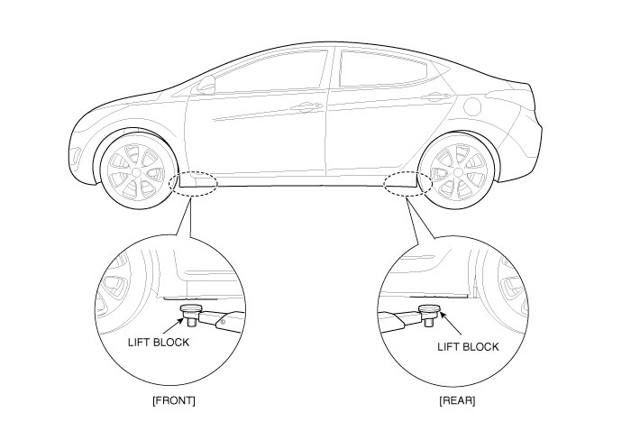

Vehicle Lifting: Service and Repair
Lift And Support Points
WARNING:
When heavy rear components such as suspension, fuel tank, spare tire, tailgate and trunk lid are to be removed, place additional weight in the luggage area before hoisting. When substantial weight is removed from the rear of the vehicle, the center of gravity may change and can cause the vehicle to tip forward on the hoist.
NOTE:
- Since each tire/wheel assembly weights approximately 30lbs (14kg), placing the front wheels in the luggage area can assist with the weight distribution.
- Use the same support points to support the vehicle on safety stands.
1. Place the lift blocks under the support points as shown in the illustration.
2. Raise the hoist a few inches (centimeters) and rock the vehicle to be sure it is firmly supported.
3. Raise the hoist to full height to inspect the lift points for secure support.
